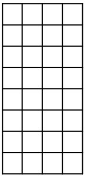
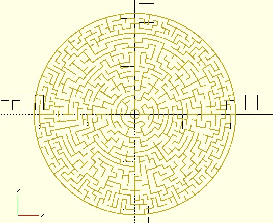

Theta 迷宮
March 26, 2022如果想做個圓形迷宮，方式之一透過圓形遮罩以及〈遮罩與蜂巢迷宮〉的方式來實現，另一種方式是使用極座標繪製，常被稱為 Theta 迷宮。
基於方形迷宮變化
之前的文件一直使用方形迷宮來變化，那麼它有沒有辦法變化為 Theta 迷宮呢？基本上是可以，出發點是將底下的圖形：

繞為底下的圓：
方式是將每一行（column）在 x 方向移動一個半徑後變成環狀：
若要用這樣的方式建立 Theta 迷宮，maze_square 的實作也是不用更改，純粹就是繪圖的方式罷了，也就是將上牆換為弧、右牆換為射線，其實也不一定要將上牆換為弧，只要列數夠多，轉換後就相當於構成的多邊形邊數夠多，看來就像個圓。
若只要要這麼實現，可以透過 dotSCAD 的 maze_squarewalls 將細胞資料轉為畫牆用的線段資料，然後透過 prf_ring 函式，它實現了座標轉換，需要指定原本的方形區域尺寸以及環半徑，以便代表線段的每個座標點轉換，轉換為環上的每個座標點。例如：
use <polyline_join.scad>
use <maze/mz_square.scad>
use <maze/mz_squarewalls.scad>
use <ptf/ptf_ring.scad>
rows = 36;
columns = 5;
cell_width = 2;
thickness = 1;
leng = rows * cell_width;
radius = 0.5 * leng / PI;
a_step = 360 / leng;
cells = mz_square(rows, columns, y_wrapping = true);
walls = mz_squarewalls(cells, cell_width, bottom_border = false);
size = [columns, rows] * cell_width;
for(wall_pts = walls) {
transformed = [for(pt = wall_pts) ptf_ring(size, pt, radius)];
polyline_join(transformed)
circle(d = thickness);
}
因為迷宮繞成環，原本的方形上與下必須能接合，這可以設定 mz_square 的 y_wrapping 為 true，而在繪製時，mz_squarewalls 不需要有最下方的牆，這可以設定 bottom_border 為 false，完成後的迷宮會長這樣：
看來蠻像一回事的，不過，這種迷宮變換的方式是，越內環的細胞越密，越外環的細胞越疏，畢竟原始迷宮資料的列數是固定的，也就是每一環的細胞數是固定的，越外環的圓周越大，分配到的空間當然就越大，將原始迷宮行數增加的話，就會更明顯：
動態切分細胞
若不希望內環與外環的細胞，分配到的空間大小有明顯的差距，基本概念可以是 n 環時讓細胞數加倍，例如，n 為 2 倍數時就讓細胞數加倍：
不過，若要令分配到的空間大小不要有明顯的差距，n 並不是固定的數，方式之一是，若細胞得到的弧長，為細胞的由內而外寬度的一定倍數時，就進行細胞的切分。
dotSCAD 的 mz_theta 實現了動態切分細胞，而後建立迷宮的演算，可以指定迷宮的環數，以及第一環要有幾個細胞，傳回的資料會是二維的 list，每一環的細胞數不一定相同，若迷宮資料是 maze，maze[i] 就是 i 環的細胞資料，想要知道該環有多少細胞？那就是 len(maze[i]) 了。
就 mz_square 的實作而言，若細胞得到的弧長，為細胞的由內而外寬度的 1.5 倍時，會進行細胞的切分，就 3D 建模而言，這個倍數足以應付絕大多數的需求。
對於每個細胞資料，可以使用 mz_theta_get 來取得訊息，例如：
use <maze/mz_theta.scad>
use <maze/mz_theta_get.scad>
rings = 8;
beginning_number = 8;
cell_width = 10;
thickness = 2;
maze = mz_theta(rings, beginning_number);
for(ring = maze) {
thetaStep = 360 / len(ring); // 該環細胞的張角
for(cell = ring) {
r = mz_theta_get(cell, "r"); // 由內往外第 r 環
c = mz_theta_get(cell, "c"); // 逆時針的第 c 個
type = mz_theta_get(cell, "t"); // 牆面類型
...看你怎麼畫圖囉...
}
}
type 表示細胞牆面會是 "NO_WALL"（無牆）、"INWARD_WALL"（內牆）、"CCW_WALL"（逆時針牆） 或 "INWARD_CCW_WALL"（內牆與逆時針牆）：
可以將單一細胞的牆面繪製封裝為 drawWall：
module drawWall(r, c, type, thetaStep, thickness) {
function vt_from_angle(theta, r) = [r * cos(theta), r * sin(theta)];
innerR = (r + 1) * cell_width;
outerR = (r + 2) * cell_width;
theta1 = thetaStep * c;
theta2 = thetaStep * (c + 1);
innerVt1 = vt_from_angle(theta1, innerR);
innerVt2 = vt_from_angle(theta2, innerR);
outerVt2 = vt_from_angle(theta2, outerR);
if(type == "INWARD_WALL" || type == "INWARD_CCW_WALL") {
polyline_join([innerVt1, innerVt2])
circle(d = thickness);
}
if(type == "CCW_WALL" || type == "INWARD_CCW_WALL") {
polyline_join([innerVt2, outerVt2])
circle(d = thickness);
}
}
這麼一來就可以完成迷宮的繪製，別忘了補上最外圍的牆：
use <maze/mz_theta.scad>
use <maze/mz_theta_get.scad>
use <hollow_out.scad>
use <polyline_join.scad>
rings = 8;
beginning_number = 8;
cell_width = 10;
thickness = 2;
maze = mz_theta(rings, beginning_number);
for(ring = maze) {
thetaStep = 360 / len(ring);
for(cell = ring) {
r = mz_theta_get(cell, "r");
c = mz_theta_get(cell, "c");
type = mz_theta_get(cell, "t");
drawWall(r, c, type, thetaStep, thickness);
}
}
// 最外圍的牆
r = cell_width * (rings + 1);
hollow_out(thickness)
offset(thickness)
circle(r, $fn = len(maze[rings - 1]));
module drawWall(r, c, type, thetaStep, thickness) {
function vt_from_angle(theta, r) = [r * cos(theta), r * sin(theta)];
innerR = (r + 1) * cell_width;
outerR = (r + 2) * cell_width;
theta1 = thetaStep * c;
theta2 = thetaStep * (c + 1);
innerVt1 = vt_from_angle(theta1, innerR);
innerVt2 = vt_from_angle(theta2, innerR);
outerVt2 = vt_from_angle(theta2, outerR);
if(type == "INWARD_WALL" || type == "INWARD_CCW_WALL") {
polyline_join([innerVt1, innerVt2])
circle(d = thickness);
}
if(type == "CCW_WALL" || type == "INWARD_CCW_WALL") {
polyline_join([innerVt2, outerVt2])
circle(d = thickness);
}
}
完成的 Theta 迷宮如下：
來看個 20 環，細胞大小看來還蠻平均的：
